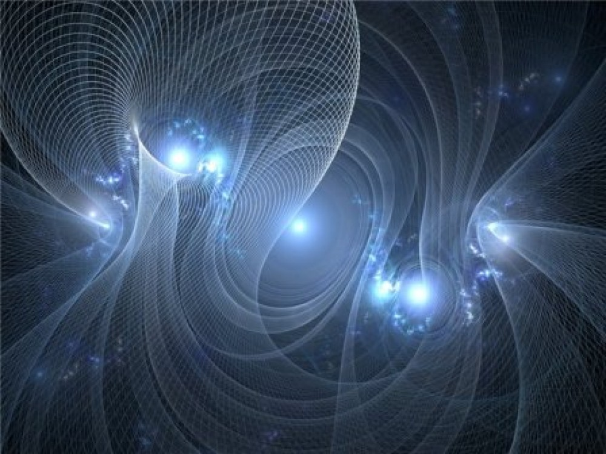
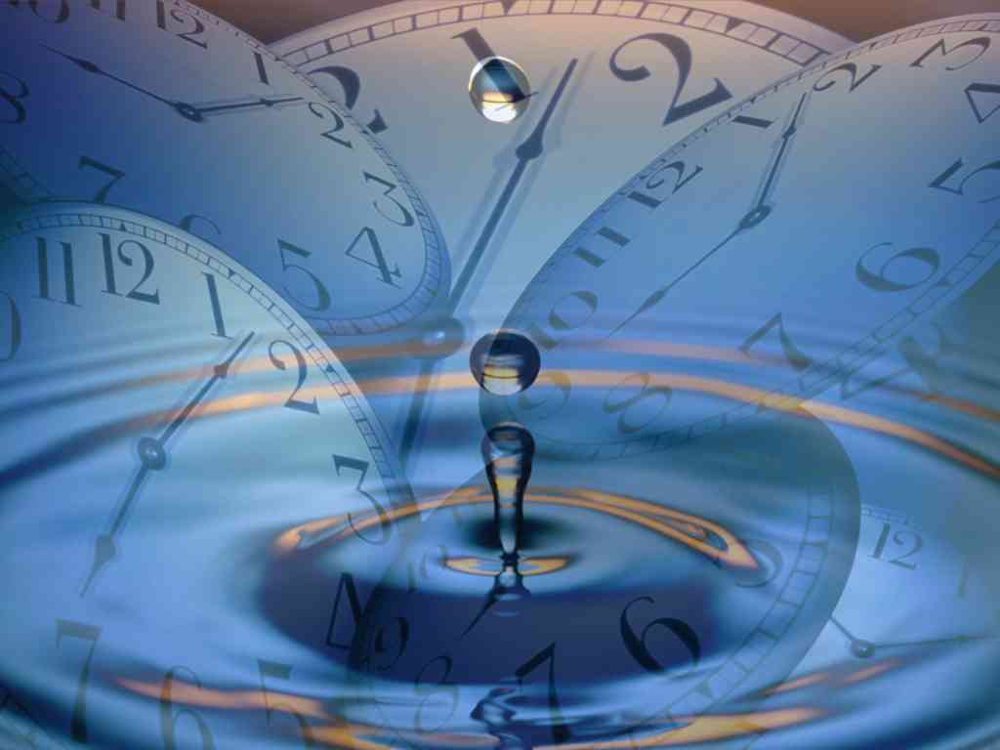
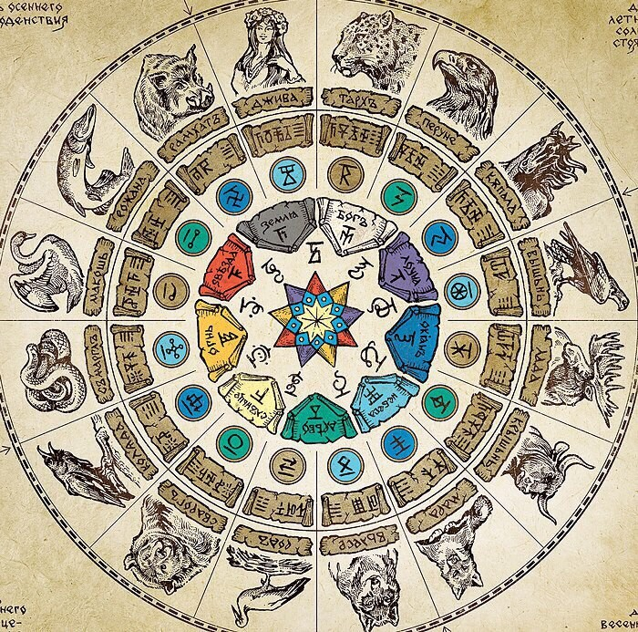
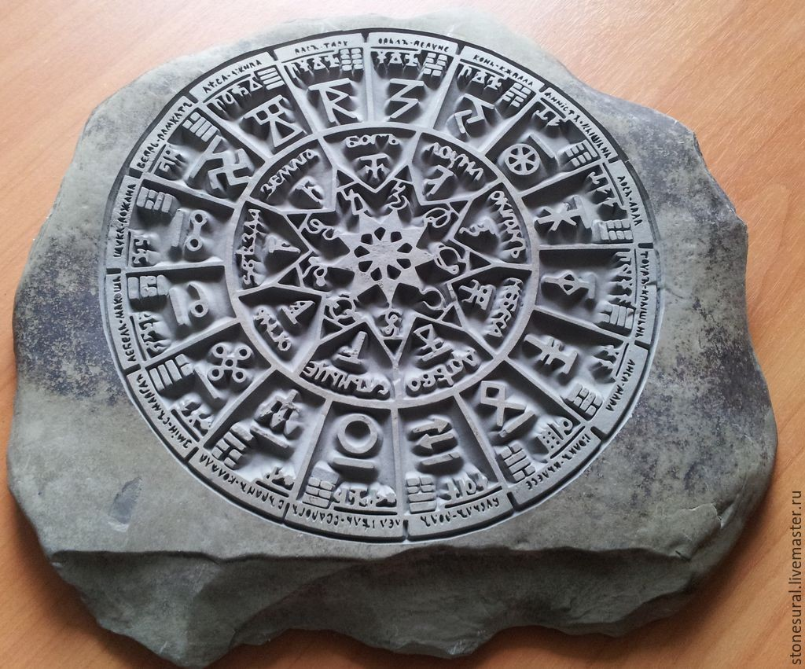

РЕКА ВРЕМЕНИ
В старину писали "Веремя". "В" - в древне русском языке означало направление куда либо; "е"-есть, "ре"- повторение, отражение (реанимация - повторное оживление, ремонт - повторный монтаж, реинкарнация - повторное воплощение)', "мя" - мое "Я". Таким образом: "Время" есть (не что иное как) направленное повторяемое отражение (излучение) Нашего "Я" (духа, атмы, искры инглии).
"Наше Я (дух, атма, искра инглии) является высшей энергией Всевышнего Единого Творца и обладает свойствами и частицы и волны, так как является светоносной" (см. свойства света в школьном разделе физики). У "Я" (Духа) нет момента рождения и смерти, оно не возникало, не возникнет и не будет возникать. "Я" - вечное, не рожденное, постоянное и самое изначальное. Оно не уничтожается когда погибает тело.
Поэтому и его направленное повторяемое излучение - называемое "временем", является Вечным. В Славяно-Арийских Ведах об этом понятии говорится так: "Боги, управляющие вселенной, это экспансии Всевышнего Творца, наделенные особыми полномочиями. Их тела состоят из Вечного Времени и Внешней Энергии, им поручено управлять различными сферами деятельности Вселенной..."
Но так как люди и Боги связаны между собой как пальцы рук в замке то и: "Энергия Души живых существ в форме Времени находится внутри и вовне их тел. Вечное Время не имеет начала и конца, оно понуждает людей рожать потомство и разрушает даже повелителя смерти".
То есть "Время", как излучение нашего "Я", имеет полевую структуру, а наши Предки, чтобы с помощью образов передать сущность потока данной полевой структуры называли образно этот поток "рекой ("ре" - отображение, "ка" на древнерусском означало - одно из) Времени", т.е. отображение одного из (потоков).
В знаменитой "Велесовой книге" например говорится: "И течёт та "река Времени" сын мой, растрачиваясь, и нынче вечны Предки наши".
Но индивидуальных частиц в нашей вселенной безчисленное множество, а значит и Временных потоков должно быть не меньше. Каждое поле (река) времени имеет свои физические характеристики, которые при определенном развитии науки и техники можно измерять и фиксировать. Самое мощное Временное поле имеет, конечно-же, наша Вселенная, в его потоке находятся все другие временные поля структурных образований космоса и живых существ. В Ведах об этом сказано так: "Материальная Вселенная, воспринимаемая чувствами, является телом Всевышнего Творца, в котором материальное время проявляется в форме прошлого, настоящего, и будущего".
И только сам Всевышний Творец вне Времени и над пространством, мы не можем до Него дотронуться, но Он всегда, постоянно в нас, как маленькая частичка огромной мыслящей материи. Каждое поле Времени движется и развивается внутри своего пространства, планетарных систем, мыслящей цивилизации, соприкасаясь, смешиваясь и взаимодействуя с другими полями. Выглядят поля Времени как закрученные спиралями пружины с искривлениями, обусловленными влиянием других объектов (соседних спиралей, отсюда проистекает и влияние небесных тел на людей). Это утверждается и современной философской концепцией, древними учениями славян и других народов. Например, в Авесте говорится, что жизнь во всех мирах развивается циклично по спирали, и в каждом из больших циклов, как и во множестве малых (каждая малая спираль закручена вокруг большей) повторяются подобия одних и тех же событий. Становление мира разворачивается, как спираль вокруг внутренней духовной точки (Всевышнего Творца), к которой он тяготеет. Циклы и повторения времён - подобны, но не равны и прошлое никогда не возвращается снова.

Спираль поля Времени конкретного человека, закручена вокруг спирали Времени развития его Рода, семьи. Поток времени Рода закручен вокруг спирали развития определенного народа. "Река Времени" жизни народа закручена вокруг спирали Времени развития земного человечества, а та в свою очередь закручена вокруг потока Времени развития нашей планеты и так далее. То есть ни одно поле Времени не находится изолированно. Оно взаимодействует с однотипными полями и находится как составляющая часть в более мощных потоках Времени. Точки соприкосновения и пересечения кругов (пружины) полей Времени одного типа - это Время происхождения столкновений различного масштаба: от столкновения различных небесных тел в космосе, до столкновения отдельных людей. Взаимопроникновение полей разных людей влияет на развитие поля Времени каждого из них. Между этими полями нет видимых границ, и одно поле естественно смешивается с другим, однако взаимовлияние такого смешивания четко прослеживается, и даже является причиной изменения некоторых физических характеристик каждого поля Времени.
При смешении полей могут произойти: замедление темпа развития поля Времени какого либо из них; ускорение темпа развития поля; частичное разрушение поля; восстановление поля Времени и т. п.
Одни и те же люди, сталкиваясь на разных витках полей Времени, друг с другом, каждый раз по разному влияют на движение и развитие поля Времени друг друга. В древних учениях славян даже приводятся усреднённые данные величины одной спирали потока Времени у представителей разных народов земного человечества. Величина одного круга Времени человека зависит от его энергоновой (энергон - это мальчайшая энергетическая частица) системы. И так как природа мать создает большое разнообразие своих созданий (что бы качества одних дополнялись качествами других), то энергетические системы людей тоже сильно различаются. У белокожих людей согласно Ведам одна спираль Времени в среднем равна 16 годам (16 канальная энергоновая система), у желтокожего человека 12 годам, у серокожего человека - 10 годам, у краснокожего человека 9 годам, у чернокожего человека 6 годам. Но как мы уже говорили это правильно только в идеальном случае, если круги времени не деформированы внешними воздействиями. При смешении разных типов людей будут и другие числа годов круга спирали. События одного круга Времени очень схожи с событиями рядом находящегося круга, поэтому зная что с вами происходило в прошлом круге можно самому прогнозировать общую направленность событий сегодняшнего дня.
На знании структуры потоков "реки Времени" основано и ясновидение, которое предполагает развитие чувств самой личности, увеличения силы её энергетических полей и приобретение умения свободно перемещаться внутри своего поля времени и внутри поля времени других людей. Пытаясь помочь кому - либо, надо как бы самому мысленно становиться тем, чьё настоящее, прошлое и будущее пытаешься объяснить. Ясновидящий, что бы узнать, что происходило с кем - либо в прошлом, то есть в предыдущих кругах поля времени, и что будет происходить в будущем, должен переходить на уровне материи мысли и материи чувств из одного круга поля времени в другой и с полученной информацией обратно. И если он делает это не для себя, а для того чтобы помочь другому, то он совершает одновременно переход и в другое измерение: из своего поля времени в поле другой личности и с полученной информацией обратно. Но можно поступить и по другому, просто попасть в центр круга Времени с мгновенным перенесением материи мысли сквозь все круги поля штопора Времени в прошлое и будущее считывая нужную информацию, правда надо ещё знать, что эта информация трансформируется, в соответствии с уровнем развития того, кто получил ответ на свой запрос.

При определенной степени подготовки и тренировки можно не только получать информацию о повторяющихся отражениях собственного "Я", но можно научиться управлять скоростью и количеством временного потока. Как мы выяснили выше. Время - это энергия и есть понятие внутреннее (ваше личное) и внешнее Время. Так вот казаки характерники в древности с успехом влияли на течение Времени. Они на столько могли ускорять личный поток Времени по отношению к общему планетарному, что для них внешнее Время как бы останавливалось. И тогда они свободно видели полет стрелы и даже пули, могли от них уклониться или поймать руками, но при таких манипуляциях происходит большой расход энергии, и поэтому перед этим действием необходимо было ещё уметь и накопить внутреннее Время. В наше Время такие эффекты тоже зафиксированы, но достигаются они уже спонтанно, тогда когда человек попадает в стрессовую ситуацию. Например, зарегистрирован случай когда во время Великой Отечественной войны боец Советской Армии увидел попавший в его окоп снаряд и для него Время замедлилось на столько, что он видел как трещинки начали расползаться по корпусу снаряда разрывая его на осколки, как осколки начали разлетаться в стороны, а боец в этот момент спокойно укрылся от них в укрытие. Или когда во время показательных выступлений Украинских ВВС разбился истребитель и летчик за доли секунды сумел расстегнуть ремни, вылезти из кресла, оттолкнуть его и выпрыгнуть. По словам летчика для его сознания прошло не менее трех - пяти минут.
Исходя из сказанного, можно предположить, что и люди и цивилизации в целом могут одновременно развиваться на разных кругах своего поля Времени, поэтому будущее уже произошло в данном поле Времени и тот кто может лицезреть все поле Времени со стороны, видит все события одномоментно...
Мудрость Предков гласит: "Изначально время было женского рода, а Числобог, её Берёг. Кроме этого, не пространство и измерения создают время, а измерения и пространство истекают из времени".
Представим себе, как представляли наши Предки образ Времени, как образ реки. Соответственно если смотреть на разрез реки (рис. 1) самая высокая скорость на фарватере. Те частицы, которые находятся в центре проходят реку гораздо быстрее, чем те, которые у берега. Создадим образную проекцию: на оси ординат уровень фарватера, абсцисс - Время (какая-то исходная точка Времени). Здесь же на оси абсцисс находятся несколько структур: черепаха, человек, собака, хомяк, комар. Проходит какой-то определенный отрезок Времени, Время течёт согласно течению "реки Времени". Допустим за основу у нас взята 1 мин.:
для черепахи прошла 1 мин.;
для человека, находящегося на своем плоту прошло 2 мин.;
для собаки - 3 мин.;
для хомяка - 4 мин.;
а для комара целых 5 мин.
Но проходит еще 1 мин., произошла следующая система прогиба во Времени, но по своему внутреннему Времени у всех прошел определенный внутренний временной период. Внутри работала одна мера Времени. Если за основу взять 1 час, у всех прошел только час, внутренне, а внешне? Если мы для примера, образно возьмём период 120 лет, комар эти 120 лет жизни проживает образно за 2 дня, хомяк проживает допустим за 3 года, собака - за 20 лет, человек за 60-80 лет, а черепаха - 300 - 400 лет, т. е. для каждого из живущих на Земле есть своё Время, причем оно неровное стационарное.
Такое же понятие характерно и для каждой из рас людей, т.е. каждая раса живёт по своим законам Времени.
Во-первых, все народы Земли имеют совершенно различные представления о судьбе и, как следствие, разнообразные эсхатологические концепции в своей национальной мифологии.
Во-вторых, основные человеческие расы имеют статистически различающееся время полового созревания, что со всей очевидностью отражено в законодательной практике народов, к этим расам принадлежащих. Время полового созревания является одной из важнейших биологических характеристик любого организма, по достижении которого кардинально меняется его поведение.
Если же проанализировать, что написано о слове "Время" в современных языках индоевропейких народов, то постулируемый средствами массовой информации универсализм Времени вообще исчезает без следа. "Этимологический словарь русского языка" (М., 1959) А. Г. Преображенского показывает, что слово "Время" означало вращение, коловращение (и это действительно так, как полевая структура Времени представляет собой вращающуюся спираль). Близкое по звучанию слово "бремя" означает тяжесть, откуда и берется просторечивая поговорка "Нести свое бремя". Парадоксально, но факт: получается, что первоначальный смысл этого слова "Время" становится понятным из словосочетания "Нести тяжесть своего Времени".
В санскрите "bharma" также означает тяжесть, ношу, в зендском "Ьагэmаn" с точностью передает тот же самый смысл.
Кроме того, русское слово "Время" по звучанию сближается с индоевропейской основой "wertmen" и санскритским "vartman", что означает "vart"- вращение, "маn"- означает человека, его "Я".
Однако в Индии есть ещё слово, обозначающее время -"kalah". Это определенный отрезок времени равный одному кругу спирали вечного времени и по русски называется "КАЛИ", то есть ограниченная одним кругом времени эпоха. Существует также общеславянская основа "вертмя", с исчезновением в которой буквы "т" первоначальный смысл слова "Время" также означает вращение. В бретонском языке также существует слово "vreman", что означает "теперь" {настоящее отражение "Я"), а "время" по-бретонски "pred" (предыдущие прошлые отражение "Я").
Большинство лингвистов вследствие этого приходит к выводу, что в индоевропейских языках понятие Времени изначально связывалось с определенным внешним проявлением некоего процесса. Мало того, в ходе эволюции это слово меняло род как в русском языке, о чем было сказано ранее, так и в древнеирландском где "ге"- время вначале было среднего, а затем стало женского рода.
Немецкое слово "die zeit" можно расшифровать как То Цикл, то есть отрезок Времени, круг, циркуль, а можно сказать и ЦЕ Ты, в староруском языке Ци, и Чи означало мерные отрезки отсюда и слово "число".
Латинский значение слова "tempus" также можно связать со Временем, т.е. со скоростью потока Времени, иногда принято связывать или с глаголом "tendo" (тянуть) или сглаголом "teneo" (держаться, длиться). Многозначительна близость латинских слов "tempus" и "templum" (храм), ибо первоначально последнее означало священное пространство, которое этрусский жрец очерчивал в полдень.
Множество фактов указывает на сакральность категории времени и у желтых народов. Китайский иероглиф "чи" или "ци", обозначающий время, также обозначает "храм".
Имя греческого Бога Хроноса - Бога Времени состоит из двух корней "хоро" (или "хро") означает вращение, (также как в русском слове "хоровод"), "нос" - носящий, то есть носящий вращение {Времени).
Бог древних римлян Янус в своем имени несет - направленное отражение "Я" - Время.
Отожествляет собою время, так же и древнеегипетский Бог Тот.

Древнерусская Богиня Макошь и её дочери Доля и Недоля и древнегерманские Богини судьбы Норны тоже служат олицетворением Времени. Имена Богинь - дочерей говорят сами за себя, а вот имена древнегерманских Богинь Урд, Верданди и Скульд обозначают прошлое, настоящее и будущее. Богини как в мифологии русской традиции, так и древнегерманской не просто "тянут" некие нити, они ткут пряжу судьбы и все они связаны со Временем.
Поразительно сходную картину мы можем наблюдать и в мифологии древних краснокожих майя. Все обелиски и алтари в их культах воздвигались с целью увековечения периодов Времени. А сами интервалы Времени изображались в виде ноши, переносимой на спинах иерархических Богов-носильщиков. Таким образом, достигалась персонификация дней, месяцев и лет. Вычислив, какие именно Боги будут маршировать в данный день, жрецы майя могли определять их совместное влияние и тем самым предсказывать судьбу человечества.
В этой связи можно сделать следующий вывод: представление о Времени восходит к самым древним глубинным пластам человеческой психики, поэтому и не случайна и его сакрализация. В каждой группе индоевропейских языков существует своё измерение и обозначение Времени, единого термина нет.
"Нельзя жить по чужому Времени", - именно это ключевое правило знают идеологи всех мировых религий, оккультисты и расовые лидеры.
Время в представлении простого человека мыслится не как универсальная, а именно как субъективная категория, иногда как процесс, который допускает вторжение в него самого человека. Время можно "тянуть", "простирать", "нести на плечах, как судьбу". Время можно вершить, вот что самое важное.
Учёным, с недавних пор, также стало известно такое понятие как "плотность" Времени. Так в уфоцентре России совершено научное открытие, доказано, что в местах посадки НЛО имеет место изменение плотности Времени. Это новое понятие в современной науке, и каждый человек ощущает это по разному. Это - вариации времени и пространства, худшее, что воздействует на наш головной мозг. В местах посадки НЛО человека тошнит, сбивается ритм серцебиения, работа кишечника, наступает потливость и т.д.
И всё же, подведем итоги что же такое "Время" с точки зрения наших Предков?
Время - это проекционное излучение - измерение нашего "Я" в виде спирального потока (современная терминология), по своей образной сути, напоминающее реку времени.

Спираль эта увеличивается и сужается. Энергия в любом замкнутом контуре идёт как вовне, так и вовнутрь, значит на оси всегда проецируется информация, поэтому, как уже было сказано выше, так называемые ясновидящие, которые видят прошлое и будущее, имеют доступ к оси времени и доступ не просто, а умеют считывать образную информацию, которая там находится. Этой спиралью, согласно древним текстам, пользуются для воплощения и реинкарнации, т.е. один человек может воплотиться как в далекое будущее, так и в далекое прошлое. Эти же мысли подтверждаются и этимологическим значением слова "время" у разных народов.
Но для наших предков важно было не только понимать сущность понятия времени, которое мы попытались выше разобрать и понять, но для повседневной жизни им нужно было его измерять и для этого существовала целая система мер, которая была связана с Природными и Человеческими Ритмами. Если ныне принятая двух круговая 12-ричная система Времени, основана на усредненных величинах (сутки, час, минуты, секунды), то Славянская система учета времени, взаимосвязана с Ритмами Жизни. Время измерялось с точность до Мига.
2. Ритмы
Современное толкование понятия Ритм - это правильное (равномерно повторяющееся) чередование, каких либо сменяющих друг друга элементов.
Ритмы движения всех объектов, от элементарных частиц до галактик, синхронизированы. Современные ученые видят в этом причину поразительной гармони Вселенной.
Например, в клетке человека согласованно протекает 10000 реакций, и все они синхронизированы. Более двухсот физиологических процессов человеческого организма синхронизированы с суточными Ритмами. Доктор физико математических наук Ф. А. Гареев из Дубны считает: стабильные частицы протоны и электроны служат эталонами Времени по которым синхронизированы движения всех объектов Вселенной. Синхронизация также существует в звуковых явлениях: две немного расстроенные органные трубы через некоторое Время начинают звучать одинаково в унисон. Оказалось, что подобное явление существует и для планет. Их движения синхронны. Для Луны скорость вращения вокруг оси - точно равна скорости движения вокруг Земли. Поэтому Месяц всегда обращен к Мидгард-Земле только одной стороной. Для других планет и их спутников эти отношения скоростей выглядят сложнее, но общий вывод несомненен - движения основных тел Солнечной системы синхронизированы.
Накопление научных данных о различных объектах природы показало: с синхронизацией мы сталкиваемся всюду, где есть вращения или колебания. Они есть везде, это обшее свойство мира. Разные объекты, несмотря на индивидуальные различные Ритмы, и очень слабые связи друг с другом, постепенно вырабатывают единый Ритм совместного существования. И начинается синхронизация с самых мельчайших частиц (энергонов). Частицы входят в общий Ритм, Образуется новая система с единой частотой, равной сумме частот движений частей. Такие же системы вновь входят в единый Ритм. Снова образуется система, куда прежняя входит как составная часть. Так возникает цепь, или иерархия систем: Элементарные частицы, ядра, атомы, молекулы, твердые тела, планеты и их спутники, Солнечная система. Галактики, Вселенная и т.д.
После открытия современными учеными первой из элементарных частиц - электрона сразу возник вопрос о строении атома. Расчёты показали: размеры центральной части атома - ядра, очень малы - в 10000 раз меньше размера атома. Оказалось, что ядро состоит из положительно заряженных протонов и нейтральных нейтронов. Изучение протонов и нейтронов показало, что это не сплошные шарики, а сложные образования. Размеры частиц, составляющих протон, меньше его во столько раз, во сколько размеры ядра меньше атома. Если увеличить протон до размера десятиэтажного дома, то частица внутри него будет подобна вишне. Соответственно, эти частицы, в свою очередь, тоже могут быть сложными образованиями.
Весь наш мир построен на стабильных частицах, как на фундаменте. Их стабильность связана с точным согласованием движений всех входящих в них частей. Входя в синхронный Ритм, они образуют следующий уровень атомные ядра, а потом и атомы. Согласование Ритмов атомов приводит к росту кристаллов. Информация о Ритмах передается от элементарных частиц до галактик. Каждая из этих систем создана по одному и тому же образу, образована повторением меньшей системы и есть часть большей. Вот почему у Природы на каждом уровне всё повторяется! Атом вновь рождается в виде Солнечной системы, а орбиты планет и электронов, следуют одинаковым принципам квантования, Кеплер, исследуя движения планет, тем самым проник в глубины атома и элементарных частиц. Ф. А. Гареев, с помощью закона Кеплера, получил распределение масс элементарных частиц. Оказалось, что соотношение между скоростями вращения вокруг своей оси и массами тел (известное для микромира как траектория Редже) повторяется от элементарных частиц до галактики снова выводится из закона Кеплера.
Долгое время считалось, что между ядром атома и кристаллом нет ничего общего. Однако накопленные данные показали, что хорошо согласуется с экспериментом модель ядра, у которого протоны и нейтроны находятся в равновесии в многограннике, подобно атомам в кристалле. Недавно обнаружено, что галактики во Вселенной расположены слоями, повторяющимися каждый 420 миллионов световых лет. Но так повторяется и расположение атомов в кристаллах! Через много уровней у Природы вновь появляется кристалл! Может быть, и внутри электрона скрыто что-то подобное Солнечной системе? "Электрон лишь представляется нам частицей. Так извне могут выглядеть другие... Вселенные." Эту интересную идею предложил современной науке астрофизик и историк науки Г. М. Идлис.
Ритмы свойственны не только для объектов не живой Природы, но и для для объектов живой Природы. Примером могут служить биологические Ритмы человека. Наши Предки, тонко чувствовавшие Природу, закрепили это в своем образе жизни. Они всегда вставали рано, незадолго до восхода солнца, и ложилась тоже рано, практически через час-два после захода. То есть вставали часа в четыре и ложилась в 8-9 вечера. Десять часов вечера считалось уже поздним временем. И при этом они не делили себя на "сов" и "жаворонков". И это говорит о том, что некоторые люди наиболее продуктивно работают ранним утром, а другие - поздним вечером. Ну и на здоровье! Пусть "жаворонки" имеют пик деятельности, скажем, с 5 до 10 утра, а "совы" с 5 до 10 вечера. Это, кстати, не освобождало Предков-"сов" или Предков-"жаворонков" от необходимости трудиться в другое время суток - жизнь заставляла.
И вот этот-то жизненный ритм, в котором жили еще с давних лет русские люди, лет десять назад был предан гласности, как результат научных изысканий в ряде научных и популярных изданий России. Кандидат медицинских наук из Владивостока Л.Я.Глыбин на основании многочисленных статистических данных вывел ритмы оптимальной жизнедеятельности организма. Материал он собирал как из историй болезни (беря время обострения, получения травм, и т.п.), так и обследуя здоровых (снимая 10 раз за сутки по 16 разных физиологических показателей).
В результате он вывел следующую закономерность: для человеческого организма состояние подъема физиологических функций отмечается с 5 до 6 часов, с 11 до 12, с 16 до 17, с 20 до 21 часа, а также с 0 часов до 1 ночи. Напротив, спад показателей отмечается с 2 до 3 часов ночи, с 9 до 10 утра, с 14 до 15, с 18 до 19 и с 22 до 23 часов.
Ритм, до которого эмпирически, опытным путем дошел Глыбин, продиктован нам Космосом. Посмотрите, как хорошо в этот график вписывается повседневная жизнь русских людей, нагружавших свой организм с 4 часов утра до 9 часов вечера (четыре из пяти природных физиологических пиков организма) и отдыхавших (спавших) днём после обеда с 14 до 15 часов. Живём ли сейчас мы так?
Древняя Вера наших Предков учит: что главное для человека эволюционное развитие по ступеням Духовного пути, от низших миров - к высшим. В самом начале своего развития человек слушает, в основном, только себя, потакает своим желаниям и прихотям, но чем выше он поднимается по ступеням Духовного развития, тем меньше он слушает свой внутренний голос, свои желания и ощущения, а более всего начинает прислушиваться к окружающему его миру Матери Природы. Учится заглядывать вглубь себя, при этом он сравнивает многообразия, существующие вовне, и многообразия, существующие внутри. И осознание единства всех этих образов и многообразий дает ключ к пониманию того, что человек неотъемлемая часть Матери Природы (а не царь и не раб), а Природа и вся Вселенная неотъемлемая часть человека.
Как говорится в Древних Ведах:
"В Безконечной Новой Вечности, в Новой Действительности родившейся, внизу такая же Безграничная непознаваемая Бездна, как и вверху, и то, что внизу, является подобием тому, что вверху, а то, что вверху, является Основой для подобия того, что внизу".
"Каждая мельчайшая частица нашего тела, камня, дерева является своеобразной Солнечной системой, Ярилой-Солнцем, окруженным Землями, на которых живут и развиваются миллиарды мыслящих существ, иногда по своему умственному и нравственному развитию нас, людей,превосходящих". ("Книга Света", Харатья Первая).
Это очередной раз доказывает, что наши ПРЕДКИ владели огромными знаниями о нашей Вселенной и жили по ЗАКОНАМ ВРЕМЕНИ и РИТМАМ ВСЕЛЕННОЙ и НАМ НУЖНО ЖИТЬ ТАКЖЕ!